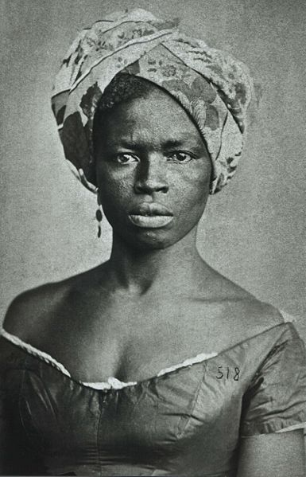
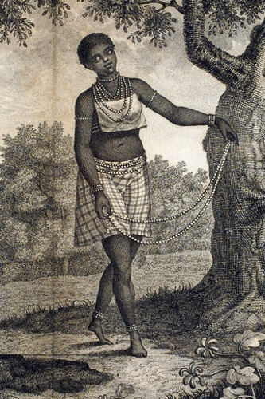
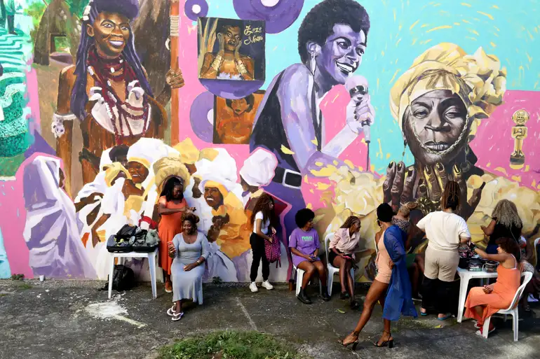
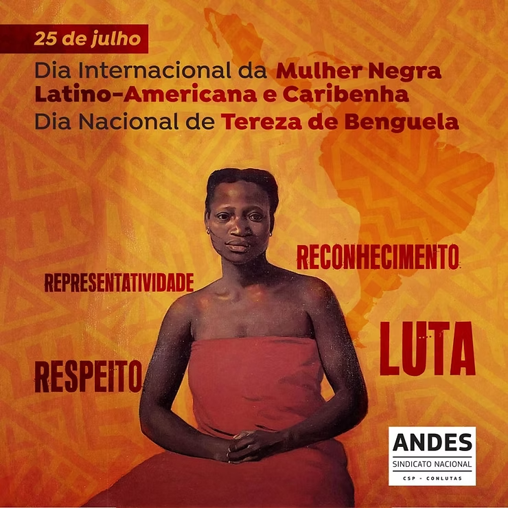
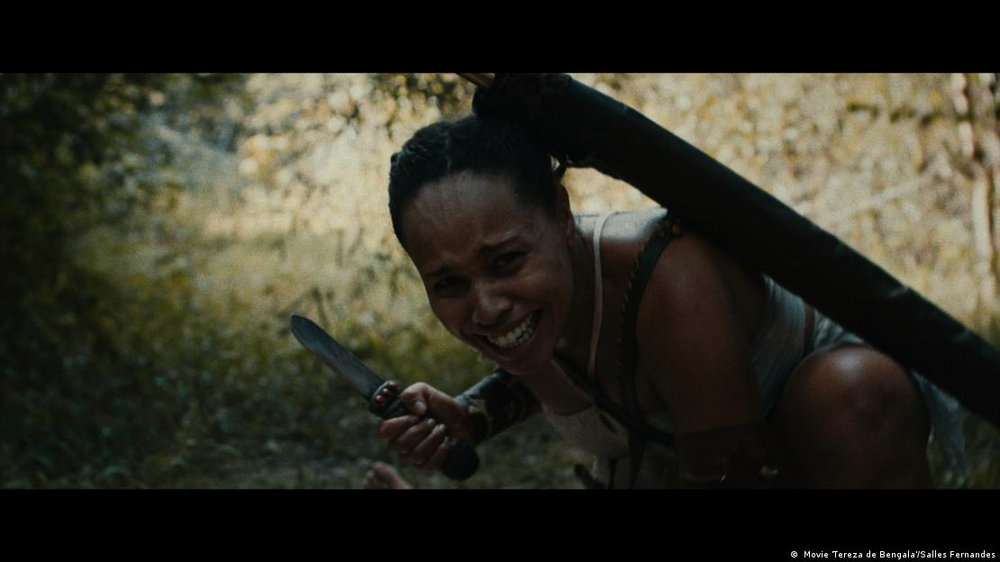

Circa 1700-1710
Tereza de Benguela nasce. Traz em seu nome a memória de Benguela, Angola — terra ancestral de deportados, símbolo de um passado de liberdade anterior à escravidão.

“A luta de hoje honra a memória dos que resistiram ontem.”
Frases inspirada no legado de Tereza de Benguela
Imagem: Montagem com retratos desenhados de Tereza de Benguela. Fonte: CAPRICHO/Reprodução.
Trajetória de uma guerreira quilombola que desafiou impérios e reinou sobre um povo livre

Imagem vinculada ao texto “Seu retrato sem cor, seu recado sem voz”, publicado no Exporvisões em 2019. Fonte: Exporvisões.
Tereza de Benguela nasceu em uma sociedade escravocrata que a viu como propriedade, mas que não conseguiu subjugar seu espírito. Nascida provavelmente entre 1700 e 1710, Tereza viveu em um contexto de extrema exploração, onde ser mulher negra escravizada significava sofrer dupla opressão — pela cor de sua pele e pelo seu gênero. Seu nome "Benguela" faz referência a Benguela, um porto da costa angolana de onde muitos africanos foram deportados como escravizados. Dessa região vinha sua memória de liberdade, de terra ancestral, de um passado anterior à escravidão que ninguém conseguiria apagar de seu coração. Tereza cresceu em condições de extrema brutalidade, mas desenvolveu consciência profunda de sua humanidade e de seu direito à liberdade.
Tereza de Benguela tornou-se a rainha do Quariterê, um quilombo localizado na região de Mato Grosso, próximo ao rio Paraguai. Ela não apenas conquistou sua liberdade pessoal, mas organizou um quilombo inteiro — unificou pessoas escravizadas fugidas, povos indígenas, e outros marginalizados pela sociedade colonial, criando uma verdadeira comunidade política e de resistência. Como segunda líder (sucedendo a Gomes da Costa), Tereza consolidou uma estrutura de governo que não aceitava nenhuma autoridade colonial — seu quilombo tinha sua própria moeda, sua própria economia, seu próprio exército. Ela foi guerreira que defendeu seu povo contra ataques coloniais, diplomata que negociou com outras lideranças quilombolas, e rainha que presidiu sobre uma comunidade livre. Sua vida inteira foi dedicada à ideia radical de que povos escravizados e marginalizados tinham não apenas direito à liberdade, mas direito a auto-organização, autodeterminação e ao próprio poder. Tereza de Benguela é um símbolo de resistência feminina preta quilombola que desafiou um dos maiores impérios da época.
As fontes descrevem o Quariterê como uma comunidade com conselho ou parlamento, produção agrícola, cultivo de algodão, tecelagem, defesa armada e relações de troca. As circunstâncias da morte de Tereza permanecem incertas, mas sua memória foi reconhecida pela Lei nº 12.987/2014, que instituiu o Dia Nacional de Tereza de Benguela e da Mulher Negra em 25 de julho.
Tereza de Benguela nasce. Traz em seu nome a memória de Benguela, Angola — terra ancestral de deportados, símbolo de um passado de liberdade anterior à escravidão.
Tereza vive sob escravidão, aprendendo desde cedo sobre sistemas de exploração, resistência coletiva, e sobre a humanidade que escravidão tentava negar. Desenvolve consciência política de que liberdade é direito inalienável.
Tereza de Benguela conquista sua fuga e se junta ao quilombo do Quariterê, no território de Mato Grosso. Encontra ali uma comunidade de resistência composta por escravizados fugidos, indígenas, e outros marginalizados.
Tereza consolida sua posição no quilombo e assume o comando após a morte de José Piolho, segundo as fontes consultadas. O Quariterê mantém organização política, produção agrícola, tecelagem e defesa armada.
Tereza lidera o Quariterê em seu auge. O quilombo torna-se símbolo de resistência, atrai fugidos de toda região, e mantém defesa estratégica contra ataques coloniais. Tereza é reconhecida como rainha por seu povo.
Forças coloniais intensificam ataques contra o Quariterê. Tereza coordena defesa militar e diplomática, negociando com outras lideranças quilombolas e indígenas. Mantém a liberdade de seu povo apesar de pressão colonial crescente.
A expedição colonial ataca e destrói o Quariterê. Documentos citam uma rainha que governava a comunidade, mas as circunstâncias da morte de Tereza permanecem incertas.
Tereza de Benguela morre em cativeiro, mas sua memória permanece como símbolo máximo de resistência feminina quilombola. Seu nome é hoje celebrado como referência de luta pela liberdade, igualdade, e autodeterminação de povos negros no Brasil.

Imagem do web story Quem foi Tereza de Benguela, publicado pela Folha de S.Paulo, sobre a liderança quilombola conhecida como Rainha Tereza. Fonte: Folha de S.Paulo.
Tereza de Benguela é extraordinária porque viveu em uma das épocas mais brutais da história brasileira — o pico do tráfico negreiro transatlântico — e não apenas conquistou sua própria liberdade, mas trabalhou incansavelmente para libertar outros. Não se contentou com liberdade pessoal: criou uma comunidade inteira de libertos, unificou diferentes grupos oprimidos (escravizados, indígenas, marginalizados), e construiu um Estado alternativo que tinha sua própria moeda, seu próprio governo, sua própria soberania. Em uma época quando mulheres não eram sequer consideradas cidadãs plenas, Tereza reinou como rainha indiscutível de seu povo.
O que torna Tereza ainda mais notável é sua capacidade de liderança política e militar. Ela não era apenas símbolo — era estrategista que defendia militarmente seu quilombo contra ataques coloniais, era diplomata que negociava alianças, era administrativa que mantinha a economia e a estrutura social funcionando. Sua coragem frente ao Império Português — uma das maiores potências da época — é prova de que mulheres negras sempre foram capazes de estar em centros de poder e de exercer autoridade máxima. Tereza desafiou não apenas a escravidão, mas a hierarquia racial e de gênero que tentava perpetuar sua sujeição.
Além disso, Tereza de Benguela é uma das poucas mulheres da história brasileira que conseguiu construir um projeto verdadeiramente igualitário e libertário, mesmo que por pouco tempo. Seu quilombo foi laboratório de uma sociedade diferente — onde pessoas anteriormente escravizadas governavam a si mesmas, onde riqueza era compartilhada, onde poder era exercido coletivamente. Isso a torna não apenas figura histórica importante, mas pensadora política radical cuja vida foi teoria viva sobre como liberdade e autodeterminação são possíveis.
Influência sobre resistência quilombola, imagética de poder negro feminino, e filosofia de liberdade.
O legado de Tereza de Benguela está na prova vivida de que mulheres negras são capazes de exercer poder político máximo. Seu quilombo do Quariterê demonstrou que escravizados não eram seres passivos, incapazes de auto-organização — pelo contrário, quando liberados da escravidão, criavam estruturas sociais sofisticadas e relativamente igualitárias. Essa lição ecoou através de séculos, servindo como inspiração e modelo para todas as gerações subsequentes de quilombolas e de movimentos negros no Brasil. Tereza provou que liberdade era conquistável, que resistência era possível, que poder negro feminino era real.
Além disso, Tereza de Benguela estabeleceu um ideal político revolucionário: que a libertação de um povo oprimido requer mais do que fuga individual, requer construção de alternativas sociais reais. Seu quilombo não era apenas refúgio de escravizados — era projeto social que imaginava sociedade diferente onde pessoas livres se autogovernam. Essa dimensão de seu pensamento — transformação social radical, não apenas resistência — tornou-a referência para pensadores políticos e ativistas negros. Hoje, Tereza de Benguela é celebrada como símbolo máximo de resistência feminina negra quilombola, sua vida e morte contando história de que mulheres negras sempre foram guerreiras, líderes, rainhas. Seu nome ecoa em ruas do Brasil, em discussões sobre história negra, em imaginários de poder e liberdade. Seu legado encoraja que mulheres negras reconheçam em Tereza uma ancestral revolucionária que lhes mostrou que liberdade é direito conquistável.
Fotos e registros históricos.

Celebração do Dia de Tereza de Benguela e da Mulher Negra Afro-Latina e Caribenha no MUHCAB, no Rio de Janeiro. A imagem registra mulheres reunidas diante de um mural artístico que homenageia a memória, a ancestralidade e o protagonismo das mulheres negras.
Foto: Tânia Rêgo/Agência Brasil.

Arte em homenagem ao Dia Internacional da Mulher Negra Latino-Americana e Caribenha e ao Dia Nacional de Tereza de Benguela, celebrado em 25 de julho.
Imagem: ANDES-SN, via ADUFOP.

Cena do curta-metragem Tereza de Benguela, dirigido por Salles Fernandes, que retrata os últimos dias da líder quilombola conhecida como a “Rainha Negra do Pantanal”. A imagem representa Tereza em um ambiente de resistência, liderança e memória histórica.
Foto: Movie Tereza de Bengala/Salles Fernandes, via DW Brasil.
Livros, artigos e documentos históricos.
Fonte sobre o Quilombo do Quariterê, Vale do Guaporé, liderança de Tereza, ataque de 1770, reconstrução do quilombo e limites documentais. Link: https://www.historia.uff.br/impressoesrebeldes/pessoa/tereza-de-benguela/
Fonte sobre Tereza como liderança quilombola, origem associada a Benguela, comando do Quariterê entre 1750 e 1770 e resistência à escravidão. Link: https://biblioteca.fflch.usp.br/terezadebenguela
Artigo acadêmico sobre versões históricas e feminismos negros em torno de Tereza de Benguela, Quariterê, memória e limites das fontes históricas. Link: https://www.scielo.org.mx/scielo.php?pid=S1405-94362022000100047&script=sci_arttext
Lei federal que institui o Dia Nacional de Tereza de Benguela e da Mulher Negra, comemorado anualmente em 25 de julho. Link: https://www.planalto.gov.br/ccivil_03/_ato2011-2014/2014/lei/l12987.htm
Fonte sobre a data nacional, a liderança de Tereza no século XVIII, a associação a José Piolho e a luta de comunidades negras e indígenas contra a escravidão. Link: https://www12.senado.leg.br/noticias/materias/2024/07/17/senado-vai-celebrar-dia-de-tereza-de-benguela-e-da-mulher-negra
Web story da Agência Senado sobre a criação da data, o comando do Quariterê, resistência por cerca de 20 anos, produção agrícola, tecelagem e comércio com vilas próximas. Link: https://webstories.senado.leg.br/web-stories/dia-nacional-de-tereza-de-benguela-e-da-mulher-negra/
Fonte sobre projeto institucional, Dia Nacional de Tereza de Benguela e da Mulher Negra, Quariterê e relação com mulheres quilombolas e de comunidades tradicionais. Link: https://www.gov.br/palmares/pt-br/assuntos/noticias/fundacao-cultural-palamares-lanca-projeto-somos-tereza-de-benguela
Fonte do Ministério das Mulheres sobre o Dia Internacional da Mulher Negra Latino-Americana e Caribenha, o Dia Nacional de Tereza de Benguela e igualdade racial e de gênero. Link: https://www.gov.br/mulheres/pt-br/central-de-conteudos/noticias/2025/julho/25-de-julho-dia-internacional-da-mulher-negra-latino-americana-e-caribenha-e-de-tereza-de-benguela-celebra-resistencia-e-protagonismo
Reportagem de contexto histórico sobre Quariterê, Vale do Guaporé, José Piolho, liderança de Tereza, sistema de conselho, produção e memória contemporânea. Link: https://www.dw.com/pt-br/tereza-de-benguela-a-rainha-negra-do-pantanal/a-70832687
Texto educativo institucional sobre Tereza como Rainha Tereza, líder do Quariterê por mais de 20 anos e símbolo do Dia da Mulher Negra Latino-Americana e Caribenha. Link: https://www.tjdft.jus.br/acessibilidade/publicacoes/sementes-da-equidade/quem-foi-tereza-de-benguela

Foto: John Mathew Smith / www.celebrity-photos.com, via Wikimedia Commons.
Simbolo da luta contra a segregação racial nos Estados Unidos e referência mundial em coragem civil.
Saiba mais
Imagem: representação de Bartolina Sisa em cédula boliviana — via Banco Central da Bolívia.
Estrategista quilombola cuja resistência ajudou a marcar a luta negra por liberdade no Brasil lorem.
Saiba mais
Imagem: representação de Bartolina Sisa em cédula boliviana — via Banco Central da Bolívia.
Intelectual fundamental para os debates sobre feminismo negro, cultura e desigualdade racial no Brasil.
Saiba mais
Imagem: representação de Bartolina Sisa em cédula boliviana — via Banco Central da Bolívia.
Liderença indigêna e jurista que ampliou a presença dos povos originários nos espaços de decisão.
Saiba mais